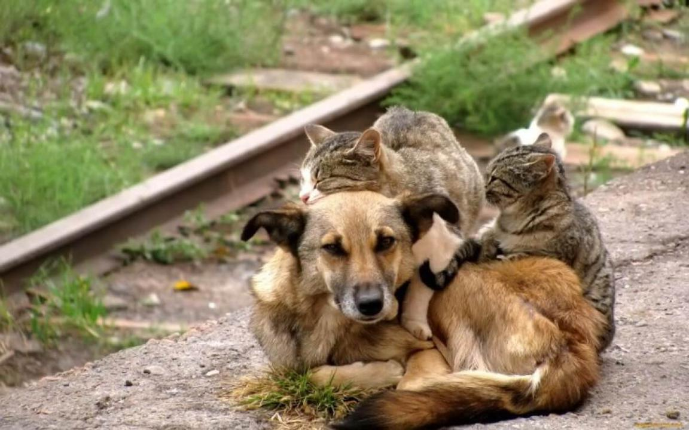

Закон Республики Казахстан «Об ответственном обращении с животными» от 30 декабря 2021 года № 97-VII ЗРК вступило в силу.
Настоящий Закон регулирует общественные отношения в области ответственного обращения с животными в целях их защиты, обеспечения безопасности, укрепления нравственности и соблюдения принципов гуманности общества при обращении с животными, а также защиты прав и законных интересов физических и юридических лиц при обращении с животными.
Понятие - бродячие собаки и кошки – это собаки и кошки, у которых невозможно установить владельца, отставшие от владельца, которые находятся без надзора со стороны владельца или ответственного лица.
Целью изъятия из среды бродячих собак и кошек (отлов и умерщвление), представляющих опасность для людей и животных является профилактика и предотвращение распространения особо опасных инфекционных заболеваний, и случаев укусов и нападения на человека.
Одним из часто распространенных заболеваний является бешенство, бродячие собаки и кошки являясь носителем и разносчиками вируса бешенства, при контакте (нападение, укус) приводят к заражению, и причиняет вред здоровью человека и животных.
Отлов и умерщвление бродячих собак и кошек, временное содержание безнадзорных и бродячих животных, идентификация безнадзорных и бродячих животных, вакцинация и стерилизация бродячих животных направлены на создание условий, исключающих возможность причинения собаками и кошками вреда здоровью людей, обеспечение санитарно – эпидемиологического и ветеринарного благополучия и контроля численности бродячих животных.
Согласно статьи 15, пункта 4, Закона Республики Казахстан «Об ответственном обращении с животными» допускается умерщвление животных в случаях: «В случае нападения животного (животных) на человека, животных и (или) иных случаях, когда животные представляют угрозу жизни или здоровью человека, животных, а также общественному порядку и безопасности»
Управлением ветеринарии Акмолинской области (далее-Управление) разработаны и утверждены решениями Акмолинского областного маслихата №7С-20-7, №7С-20-8 от 14 сентября 2022 года «Правила отлова, временного содержания и умерщвления животных в городах и других населенных пунктах Акмолинской области», «Правила содержания и выгула домашних животных в городах и других населенных пунктах Акмолинской области».
Управление является администратором (719) ниже следующих бюджетных программ;
010 «Организация отлова и уничтожения (умерщвления) бродячих собак и кошек»
032 «Временное содержание безнадзорных и бродячих животных»
033 «Идентификация безнадзорных и бродячих животных»
034 «Вакцинация и стерилизация бродячих животных»
Для реализации Закона РК «Об ответственном обращении с животными» Акиматом области для регулирования численности бродячих собак и кошек из областного бюджета выделены финансовые средства.
Управлением, разрабатывается техническая спецификация для проведения конкурса. После проведения административных процедур для определения победителя конкурса будут объявлены государственные закупки по соответствующим программам (организация отлова и уничтожения (умерщвление) бродячих собак и кошек; временное содержание безнадзорных и бродячих животных; идентификация безнадзорных и бродячих животных; вакцинация и стерилизация бродячих животных).По итогам государственных закупок с победителем конкурса будет заключен договор на выполнение работ по регулированию численности бродячих животных.
Приглашаем принят активное участие в государственных закупках услуг и работ общественным организациям по защите животных, юридическим и физическим лицам.